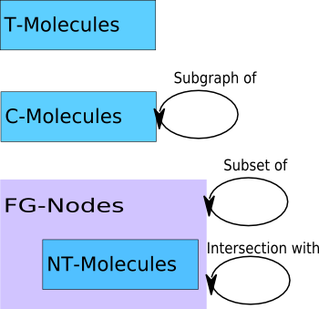

Graph Versioning System
Reto Bachmann-Gmür, Chris Dollin
Hewlett-Packard Development Company, L.P.
RDF and change
- Ontologies can model the time-dimension
- Ontologies rarely take into account that the described world is changing
- For many use-cases change aware ontologies aren't needed and would make things more complicated
- It's impossible to foresee everything that could change
Approaches
- Triple-oriented approach
- Decomposition-oriented approach
Architecture
- Deterministic lossless decomposition
- RDF-Molecules
- Functionally Grounded Nodes
- Metamodel: what, when, where
API: The Store
- class com.hp.hpl.jena.gvs.Store
- GraphOverTime getGraphOverTime(Set<Source> sources);
- void assertGraph(Source source, Graph graph, Date date);
- void revokeGraph(Source source, Graph graph, Date date);
- void updateGraph(Source source, Graph graph, Date date);
- Set<Source> getSources();
API: Graph Over Time
- class com.hp.hpl.jena.gvs.GraphOverTime
- Graph getGraph(Date moment);
- void assertGraph(Source source, Graph graph, Date date);
- Iterator<Date> previousChanges(Date d);
- Iterator<Date> followingChanges(Date d);
Yet another Graph
- interface Graph extends Collection<Triple>
- Inmutable
- Identity criterion
- Java 5
Application
- Command line tools
- Services: HTTP, Aggregator
HTTP Access
- RESTful interface
- AJAX Application
Where to go?
- Access Control
- Documentation
- Performance
- Jena Model-Wrapper
- Oh, yeah? - feature
- Querying
- Resource oriented browsing
- Remote Synchronization
- Extracting Diffs
Perfomance improvement
- Strong hash on all molecules which can be predictably serialized and on all fg-nodes
Relations between components
